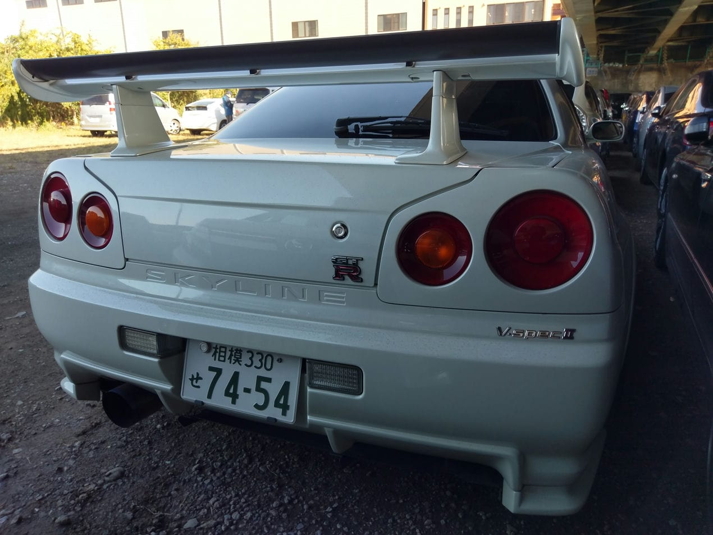
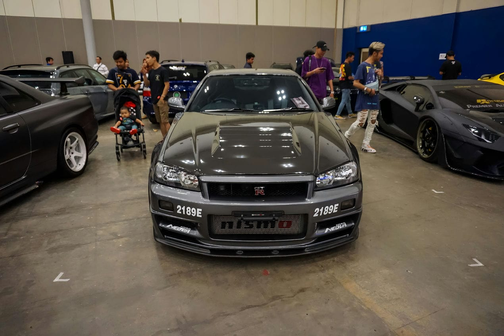

O Nissan GT-R é um modelo de automóvel superesportivo produzido pela Nissan, foi anunciado em 2001 com o objectivo de dar sequencia a marca GT-R (que surgiu na década de 1960 que fez sucesso com o Skyline), em 6 de Dezembro de 2007 foi oficialmente lançado no Japão, em 2008 chegou aos Estados Unidos, Canadá e Portugal, no resto do mundo apenas em 2009. O modelo 2007 possui um motor 3.8 V6 Biturbo com potência de 480Cv (362 kW) e 59.95Kgfm (588,0N.m.) de torque, acoplado a uma transmissão automatizada de 6 marchas com dupla embreagem e sistema de tração AWD ATTESA E-TS®, esse conjunto fornece desempenho capaz de levar os 1740Kg de 0–100 km/h em 2.7s e tem velocidade máxima de 385 à 395 km/h.
O R34 GT-R não era apenas um carro, mas uma família de veículos que incluía modelos como Series 1, Series 2, V-Spec e M-Spec. Encontrar um V-Spec II era uma tarefa árdua, pois apenas 1.855 unidades foram produzidas. Além disso, a Nissan criou modelos especiais para homenagear a conexão do carro com o lendário circuito de Nürburgring, como o V-Spec II Nur e o M-Spec Nur.
O Nissan Skyline GT-R R34 tem suas raízes no lendário R32 GT-R, que ganhou o apelido de “Godzilla” após sua impressionante vitória no Campeonato Japonês de Carros de Turismo. O R32 GT-R mostrou ao mundo que a engenharia japonesa poderia competir com as melhores do mundo, e isso preparou o terreno para o R34.
O apelido “Godzilla” não veio por acaso. O R32 GT-R dominou as pistas de corrida, conquistando vitórias de forma avassaladora, deixando seus concorrentes para trás. Isso solidificou sua reputação como um monstro nas pistas, daí o nome “Godzilla”.
Ao contrário de seus antecessores, o R34 GT-R teve uma produção relativamente curta, ocorrendo entre 1999 e 2002, com um total de 11.578 unidades fabricadas. No entanto, foi durante esses anos que o R34 se estabeleceu como um verdadeiro ícone automotivo.
Embora tenha tido uma produção mais curta em comparação com os modelos anteriores, o R34 GT-R deixou uma marca indelével na história automotiva. Sua combinação de desempenho arrebatador e design marcante conquistou os corações dos entusiastas de carros em todo o mundo.
Todos os R34 GT-Rs eram equipados com uma transmissão manual de seis velocidades e tração nas quatro rodas. No entanto, o verdadeiro destaque estava sob o capô. O motor RB26DETT, famoso entre os aficionados por carros, oferecia um potencial de ajuste para até 600 cavalos de potência.
O motor RB26DETT era uma obra-prima da engenharia, com dois turbocompressores que entregavam uma aceleração impressionante e uma experiência de direção emocionante. Sua capacidade de produzir potência com facilidade o tornou uma escolha popular entre os entusiastas que desejavam personalizar seus carros.
O desempenho do R34 GT-R era de tirar o fôlego. Ele podia acelerar de 0 a 100 km/h em apenas 3,8 segundos e atingir uma velocidade máxima de 327 km/h em 2003. Seu preço atual reflete seu status de supercarro icônico, com alguns exemplares do Z-Tune alcançando valores de sete dígitos.